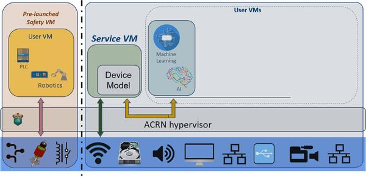

ACRN hypervisor
Zephyr’s is capable of running as a guest under the x86 ACRN hypervisor (see https://projectacrn.org/). The process for getting this to work is somewhat involved, however.
ACRN hypervisor supports a hybrid scenario where Zephyr runs in a so-called “pre-launched” mode. This means Zephyr will access the ACRN hypervisor directly without involving the SOS VM. This is the most practical user scenario in the real world because Zephyr’s real-time and safety capability can be assured without influence from other VMs. The following figure from ACRN’s official documentation shows how a hybrid scenario works:

ACRN Hybrid User Scenario
In this tutorial, we will show you how to build a minimal running instance of Zephyr and ACRN hypervisor to demonstrate that it works successfully. To learn more about other features of ACRN, such as building and using the SOS VM or other guest VMs, please refer to the Getting Started Guide for ACRN: https://projectacrn.github.io/latest/tutorials/using_hybrid_mode_on_nuc.html
Build your Zephyr App
First, build the Zephyr application you want to run in ACRN as you normally would, selecting an appropriate board:
west build -b acrn_ehl_crb samples/hello_world
In this tutorial, we will use the Intel Elkhart Lake Reference Board
(EHL CRB) since it is one of the suggested platforms for this
type of scenario. Use acrn_ehl_crb as the target board parameter.
Note the kconfig output in build/zephyr/.config, you will need to
reference that to configure ACRN later.
The Zephyr build artifact you will need is build/zephyr/zephyr.bin,
which is a raw memory image. Unlike other x86 targets, you do not
want to use zephyr.elf!
Configure and build ACRN
First you need the source code, clone from:
git clone https://github.com/projectacrn/acrn-hypervisor
We suggest that you use versions v2.5.1 or later of the ACRN hypervisor as they have better support for SMP in Zephyr.
Like Zephyr, ACRN favors build-time configuration management instead
of runtime probing or control. Unlike Zephyr, ACRN has single large
configuration files instead of small easily-merged configuration
elements like kconfig defconfig files or devicetree includes. You
have to edit a big XML file to match your Zephyr configuration.
Choose an ACRN host config that matches your hardware (“ehl-crb-b” in
this case). Then find the relevant file in
misc/config_tools/data/<platform>/hybrid.xml.
First, find the list of <vm> declarations. Each has an id=
attribute. For testing Zephyr, you will want to make sure that the
Zephyr image is ID zero. This allows you to launch ACRN with just one
VM image and avoids the need to needlessly copy large Linux blobs into
the boot filesystem. Under currently tested configurations, Zephyr
will always have a “vm_type” tag of “SAFETY_VM”.
Configure Zephyr Memory Layout
Next, locate the load address of the Zephyr image and its entry point address. These have to be configured manually in ACRN. Traditionally Zephyr distributes itself as an ELF image where these addresses can be automatically extracted, but ACRN does not know how to do that, it only knows how to load a single contiguous region of data into memory and jump to a specific address.
Find the “<vm id=”0”>…<os_config>” tag that will look something like this:
<os_config> <name>Zephyr</name> <kern_type>KERNEL_ZEPHYR</kern_type> <kern_mod>Zephyr_RawImage</kern_mod> <ramdisk_mod/> <bootargs></bootargs> <kern_load_addr>0x1000</kern_load_addr> <kern_entry_addr>0x1000</kern_entry_addr> </os_config>
The kern_load_addr tag must match the Zephyr LOCORE_BASE symbol
found in include/arch/x86/memory.ld. This is currently 0x1000 and
matches the default ACRN config.
The kern_entry_addr tag must match the entry point in the built
zephyr.elf file. You can find this with binutils, for example:
$ objdump -f build/zephyr/zephyr.elf build/zephyr/zephyr.elf: file format elf64-x86-64 architecture: i386:x86-64, flags 0x00000012: EXEC_P, HAS_SYMS start address 0x0000000000001000
By default this entry address is the same, at 0x1000. This has not always been true of all configurations, however, and will likely change in the future.
Configure Zephyr CPUs
Now you need to configure the CPU environment ACRN presents to the
guest. By default Zephyr builds in SMP mode, but ACRN’s default
configuration gives it only one CPU. Find the value of
CONFIG_MP_MAX_NUM_CPUS in the Zephyr .config file give the guest that
many CPUs in the <cpu_affinity> tag. For example:
<vm id="0"> <vm_type>SAFETY_VM</vm_type> <name>ACRN PRE-LAUNCHED VM0</name> <guest_flags> <guest_flag>0</guest_flag> </guest_flags> <cpu_affinity> <pcpu_id>0</pcpu_id> <pcpu_id>1</pcpu_id> </cpu_affinity> ... <clos> <vcpu_clos>0</vcpu_clos> <vcpu_clos>0</vcpu_clos> </clos> ... </vm>
To use SMP, we have to change the pcpu_id of VM0 to 0 and 1. This configures ACRN to run Zephyr on CPU0 and CPU1. The ACRN hypervisor and Zephyr application will not boot successfully without this change. If you plan to run Zephyr with one CPU only, you can skip it.
Since Zephyr is using CPU0 and CPU1, we also have to change VM1’s configuration so it runs on CPU2 and CPU3. If your ACRN setup has additional VMs, you should change their configurations as well.
<vm id="1"> <vm_type>SOS_VM</vm_type> <name>ACRN SOS VM</name> <guest_flags> <guest_flag>0</guest_flag> </guest_flags> <cpu_affinity> <pcpu_id>2</pcpu_id> <pcpu_id>3</pcpu_id> </cpu_affinity> <clos> <vcpu_clos>0</vcpu_clos> <vcpu_clos>0</vcpu_clos> </clos> ... </vm>
Note that these indexes are physical CPUs on the host. When configuring multiple guests, you probably don’t want to overlap these assignments with other guests. But for testing Zephyr simply using CPUs 0 and 1 works fine. (Note that ehl-crb-b has four physical CPUs, so configuring all of 0-3 will work fine too, but leave no space for other guests to have dedicated CPUs).
Build ACRN
Once configuration is complete, ACRN builds fairly cleanly:
$ make -j BOARD=ehl-crb-b SCENARIO=hybrid
The only build artifact you need is the ACRN multiboot image in
build/hypervisor/acrn.bin
Assemble EFI Boot Media
ACRN will boot on the hardware via the GNU GRUB bootloader, which is itself launched from the EFI firmware. These need to be configured correctly.
Locate GRUB
First, you will need a GRUB EFI binary that corresponds to your hardware. In many cases, a simple upstream build from source or a copy from a friendly Linux distribution will work. In some cases it will not, however, and GRUB will need to be specially patched for specific hardware. Contact your hardware support team (pause for laughter) for clear instructions for how to build a working GRUB. In practice you may just need to ask around and copy a binary from the last test that worked for someone.
Create EFI Boot Filesystem
Now attach your boot media (e.g. a USB stick on /dev/sdb, your hardware may differ!) to a Linux system and create an EFI boot partition (type code 0xEF) large enough to store your boot artifacts. This command feeds the relevant commands to fdisk directly, but you can type them yourself if you like:
# for i in n p 1 "" "" t ef w; do echo $i; done | fdisk /dev/sdb ... <lots of fdisk output>
Now create a FAT filesystem in the new partition and mount it:
# mkfs.vfat -n ACRN_ZEPHYR /dev/sdb1 # mkdir -p /mnt/acrn # mount /dev/sdb1 /mnt/acrn
Copy Images and Configure GRUB
ACRN does not have access to a runtime filesystem of its own. It receives its guest VMs (i.e. zephyr.bin) as GRUB “multiboot” modules. This means that we must rely on GRUB’s filesystem driver. The three files (GRUB, ACRN and Zephyr) all need to be copied into the “/efi/boot” directory of the boot media. Note that GRUB must be named “bootx64.efi” for the firmware to recognize it as the bootloader:
# mkdir -p /mnt/acrn/efi/boot # cp $PATH_TO_GRUB_BINARY /mnt/acrn/efi/boot/bootx64.efi # cp $ZEPHYR_BASE/build/zephyr/zephyr.bin /mnt/acrn/efi/boot/ # cp $PATH_TO_ACRN/build/hypervisor/acrn.bin /mnt/acrn/efi/boot/
At boot, GRUB will load a “efi/boot/grub.cfg” file for its runtime
configuration instructions (a feature, ironically, that both ACRN and
Zephyr lack!). This needs to load acrn.bin as the boot target and
pass it the zephyr.bin file as its first module (because Zephyr was
configured as <vm id="0"> above). This minimal configuration will
work fine for all but the weirdest hardware (i.e. “hd0” is virtually
always the boot filesystem from which grub loaded), no need to fiddle
with GRUB plugins or menus or timeouts:
# cat > /mnt/acrn/efi/boot/grub.cfg<<EOF set root='hd0,msdos1' multiboot2 /efi/boot/acrn.bin module2 /efi/boot/zephyr.bin Zephyr_RawImage boot EOF
Now the filesystem should be complete
# umount /dev/sdb1 # sync
Boot ACRN
If all goes well, booting your EFI media on the hardware will result in a running ACRN, a running Zephyr (because by default Zephyr is configured as a “prelaunched” VM), and a working ACRN command line on the console.
You can see the Zephyr (vm 0) console output with the “vm_console” command:
ACRN:\>vm_console 0 ----- Entering VM 0 Shell ----- *** Booting Zephyr OS build v2.6.0-rc1-324-g1a03783861ad *** Hello World! acrn